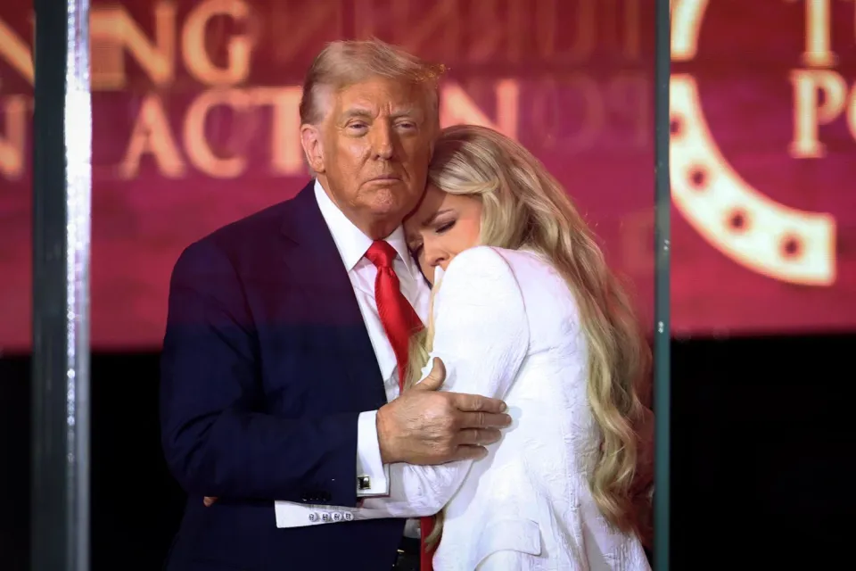

世界苦茶09月22日新闻 | 34条 | 英加澳承認巴勒斯坦

英加澳承認巴勒斯坦 | 伯克希爾清倉比亞迪 | 全智賢陷荒謬辱華風波 | 馬斯克與特朗普再同框 | 阿富汗拒絕給予美軍基地 | 美國邊境沙皇霍曼受賄案被特朗普內閣保護
苦茶数据
美元兑人民币：7.11（昨日7.10，前日7.11）
美元兑日元：148.36（昨日147.90，前日147.56）
上证指数：3822（昨日3820，前日3828）
标普500指数：休市（昨日6664，前日6631）
比特币：114461（昨日115700，前日115553）
布伦特原油：67.08（昨日66.68，前日67.31）
中国新闻
• 美众院代表团访华 ：一组美国国会议员星期天正式访问中国并举行会谈，这是自2019年以来首次有美国众议院代表团访华。此举表明中美正加紧接触，以努力稳定双边关系。根据路透社，美国驻华大使馆组织的媒体联合报道称，由民主党众议员史密斯率领的跨党派代表团，将在北京人民大会堂与中国总理李强会面。史密斯曾任众议院军事委员会主席，目前是有关委员会的民主党领袖。
• 山西师殴生属实 ：中国山西地方教育局通报，网传一中学老师殴打学生的事件属实，教育局责成涉事教师暂时停课，并对校长进行诫勉；学生和家长据称已谅解。据媒体第一现场报道，山西长治壶关县百尺中学老师殴打学生的视频星期五在互联网传播，被打学生左侧脸部满是淤痕，左侧眼角有淤血。壶关县教育局星期六通报，称立即成立调查组开展深入调查，发现网传事件属实。
• 内蒙采集男性DNA通告 ：内蒙古自治区锡林浩特市公安局20日发布通告称，9月5日起集中采集辖区内男性居民血样录入本地DNA数据库，采集地点在居民户籍所在地派出所。警方表示，本次血样采集的作用是完善公民身分资讯，直接关联到个人身分证、护照等证件的办理，“对于防范老人儿童走失、人员身份信息确认等方面，具有重大作用”，并称采集过程严格遵循相关规范，居民个人信息及生物样本将依法严格保密，确保信息安全。通告还说，此项工作“功在当代、利在千秋”希望全体市民理解支持，共同推动工作顺利展开。 （翻評：感覺非常不妙。）
• 贵州疑食物中毒 ：中国贵州一县发生疑似食物中毒事件，造成包括儿童在内的多人入院治疗。据新华社报道，贵州省遵义市习水县发生疑似食物中毒事件。截至星期天，已造成包括儿童在内的多人入院治疗。报道没有提到事件发生的具体时间点，但称入院治疗者是吃了“习水县麦可美加乐食品厂”生产的三明治，出现肝肾功能异常等症状。这家食品厂在习水县共有八家自营店，涉事的同批次三明治共卖出208份，已紧急召回29份，实际卖出179份。 （翻評：最近食物中毒時間非常高發。）
• 习水三明治致感染 ：贵州习水近日发生食物沙门氏菌感染。经判定，患者病症由沙门氏菌污染“三明治”糕点引起。糕点为习水县麦可美加乐食品厂生产。截至9月21日17时，住院观察治疗136人，患者症状表现为发热、腹痛、腹泻，病情体征稳定。
• 三峡迎年内最大洪 ：受华西秋雨影响，三峡水库迎来2025年最大洪水过程。据“三峡小微”微信公号，汛末受华西秋雨影响，长江上游嘉陵江及三峡区间出现多轮次降雨过程，三峡水库入库流量从9月17日开始逐步上涨，9月20日迎来入库流量超过40000立方米每秒的洪水。为确保三峡库区防洪安全，三峡集团按照水利部长江水利委员会调度令，于9月16日加大三峡水库出库流量，将库水位最低降至162.6米。洪峰入库时，三峡水库按照电站满发控制出库流量为25300立方米每秒，在保障上下游防洪安全的同时与蓄水调度做好衔接。
• 全智贤陷辱华风波 ：韩国女星全智贤新剧台词说中国偏好战争，引起中国网民大范围不满和抵制，她在华代言广告被品牌方撤下。综合中国《大河报》、香港01等媒体报道，因出演《我的野蛮女友》及《来自星星的你》等韩剧在中国知名度颇高的全智贤，因新剧台词和画面等被指辱华，遭到中国网民声讨。她与韩国男星姜栋元主演的《暴风圈》近日首播，在剧中饰演前外交官的全智贤在第四集中有一句对白是“为什么中国会偏好战争？”，引发大批网民抗议指与现实严重不符，话题登上微博热搜。剧中显示“中国大连”为破烂棚户房子，以及反派角色多使用中文等内容，也引发中国网民强烈抵制。不少人留言称“脸给多了，她不知道14亿人的巴掌有多疼”“韩国最喜欢的女明星，从小喜欢到现在，不说了脱粉了再见”等。大批网民涌入品牌评论区要求解约，并强调“辱华艺人不应被中国市场接纳”。目前，海蓝之谜和路易威登官方微博已删除全智贤所有相关博文，她代言的另一品牌伯爵撤下广告内容。《暴风圈》在豆瓣的评分已跌至4.2分。 （翻評：哈？現在辱華這麼低了？中國偏好戰爭？剛閱兵完，不是嗎？）
• 江门爆基孔肯雅热 ：中国广东江门市累计报告逾1700例基孔肯雅热病例，并启动了突发公共卫生事件Ⅲ级响应。综合新华社和《江门日报》报道，江门市星期六举行基孔肯雅热疫情防控新闻发布会，江门副市长周佩珊介绍了全市基孔肯雅热疫情防控的总体情况及防控措施。据发布会公布的信息，截至星期五，江门市累计报告1714例基孔肯雅热病例。目前江门市所有病例均为轻症，没有出现重症和死亡病例。江门市已根据突发公共卫生事件有关应急预案，结合当前基孔肯雅热疫情防控形势，决定启动江门市突发公共卫生事件Ⅲ级响应。
亚太印太新闻
• 朝鲜疑筹备大阅兵 ：韩国媒体报道，朝鲜有在平壤筹备阅兵的迹象，并称中国国家主席习近平届时是否会对朝鲜进行回访备受关注。韩联社引述韩国政府消息人士星期天称，政府捕捉到朝鲜在平壤美林机场附近筹备劳动党建党80周年纪念阅兵式的迹象。这名人士说，卫星7月初起在美林机场附近阅兵训练场的上空捕捉到疑似为制式教练队列、移动式发射台的车辆和设备等。据此推测，朝鲜可能在筹备定于下月10日举行的劳动党建党80周年纪念阅兵式。
• 金正恩释对话条件 ：朝鲜领导人金正恩说，如果美国不再坚持朝鲜放弃核武器，朝鲜就没有理由回避与美国的对话。朝鲜中央通讯社报道，金正恩星期天在最高人民会议上发表讲话时说，他仍然对美国总统特朗普有美好的回忆。在特朗普第一个总统任期时，两国领导人曾三次会面。他说：“如果美国放弃对我们无核化的荒谬执念，接受现实，并希望实现真正的和平共处，我们没有理由不与美国坐下来谈判。”
• 柯文哲遭深夜查勤 ：台湾民众党前主席柯文哲的妻子陈佩琪称，每天半夜几乎都有监控中心打电话来查行踪，让柯文哲睡不好。综合台湾《上报》和联合新闻网报道，柯文哲涉京华城案被羁押超过一年，本月获交保。陈佩琪在脸书提到柯文哲交保后的状况，称柯配戴电子监控仪器，疑因讯号问题，每天半夜都有监控中心打电话查行踪，有一次是晚上11点， 其他都是清晨3至5点间，理由是收讯不良，担心柯文哲逃跑。
• 菲民众抗议幽灵基建 ：数以千计的菲律宾民众星期天聚集在马尼拉，抗议涉及虚假防洪工程的丑闻。这个丑闻据称令菲律宾损失数十亿美元，引发全国公愤。法新社报道，约1万3000人星期天上午参加了在首都马尼拉的黎刹公园举行的集会，对被称为“幽灵基础设施工程”的舞弊项目表达愤怒。示威者指责这些根本未曾动工的防洪项目耗费巨额国家预算，而真正的防灾设施却仍严重匮乏。
• 大马否推演唱会尿检 ：马来西亚通讯部副秘书长聂卡玛鲁扎曼说，尽管此前有呼声要求对演唱会观众进行尿液检测，以杜绝毒品滥用，但政府暂无这项计划。《东方日报》报道，聂卡玛鲁扎曼接受《星报》采访时说，政府目前没有计划引入此类筛查，反而主办单位应通过主动检测和合规措施，确保观众没有受到酒精或毒品的影响。“这包括部署训练有素的安保人员、在入口处进行搜包检查、以及与警方及其他执法单位合作，处理任何可疑的醉酒案件。”
科技新闻
• AI工具预测20年病风险 ：一个国际团队日前在英国《自然》杂志发表论文说，他们开发出的人工智能新工具可用于预测一个人在未来20年罹患多种疾病的风险，这有助于医生识别高危人群，从而及早采取预防措施。德国癌症研究中心等机构研究人员设计了这个名为Delphi-2M的人工智能工具，利用英国生物样本库中40万人的健康数据对它进行训练，使它可根据一个人既往病史，以及年龄、性别、体重指数以及吸烟和饮酒等健康习惯因素，预测这个人在未来长达20年的时间里罹患各种疾病的可能性，可预测的疾病种类超过一千种。不过，研究人员也表示，这个人工智能工具还存在局限性，比如用于训练的数据来源范围较窄。
• Optus故障致急呼瘫 ：新电信旗下澳大利亚子公司澳都斯指出，之前导致当地紧急呼叫服务瘫痪长达13小时，并与四起死亡事件相关的故障，是由于网络防火墙升级时未遵循既定程序。澳都斯星期天发文告说，由于系统升级过程中发生技术故障，影响用户拨通当地“000”紧急呼叫电话。这导致南澳大利亚州、北领地和西澳大利亚州的部分紧急呼叫无法接通。此外，新南威尔士州西部部分地区的紧急呼叫也受影响。这起事故发生在星期四凌晨12时30分至下午1时30分，其间约600名用户可能受影响。澳洲政府已宣布展开调查，形容事故“不可接受”，Optus则指出会全面配合。
• 默多克家族与戴尔将参与收购TikTok平台： 美国总统特朗普称，保守派媒体亿万富翁鲁珀特·默多克和个人计算机先驱迈克尔·戴尔预计将参与一个买方团体，以将TikTok从中国所有权中剥离。特朗普上周日表示，默多克和他的儿子拉克兰 “可能” 会参与收购TikTok股份。知情人士称，福克斯公司正洽谈投资TikTok。这笔投资不会通过默多克家族的个人资产或新闻集团进行。戴尔已参与谈判数月。目前尚未达成协议，但他们补充称对最终达成协议 “持乐观态度”。特朗普在接受福克斯新闻采访时还证实，甲骨文创始人拉里·埃里森将加入投资者团队，该财团将与其他未具名的知名人士一道筹集“一大笔资金”。
财经新闻
• 对美稀土磁铁下滑 ：尽管中国政府近期放松限制后整体出口持续回升，但8月份中国对美国的稀土磁铁出货量仍出现下滑。彭博社报道，中国海关总署星期六公布的数据显示，中国对美国的稀土磁铁出口量环比下降5%，至590吨；同期总出口量增至约6146吨，创今年1月以来新高。这些数据是在美国总统特朗普与中国国家主席习近平于星期五通话，讨论贸易紧张局势之后公布的。
• 伯克希尔清仓比亚迪 ：巴菲特旗下的伯克希尔哈撒韦公司已完全退出对中国电动汽车制造商比亚迪的盈利的股权投资。2022年8月，伯克希尔开始减持其在2008年以2.3亿美元购入的2.25亿股比亚迪股份，占总股份的约20%。此前，该持股价值在当年第二季度飙升41%，达到90亿美元。伯克希尔持有比亚迪股票的这些年里，其股价上涨了约3890%。然而，持有这些股份的子公司伯克希尔哈撒韦能源公司在财务报告中显示，截至 3 月 31 日，这笔投资的价值为零。伯克希尔发言人证实，比亚迪的所有持股确实已被全部出售。巴菲特没有详细解释伯克希尔开始出售股份的原因，但在2023年曾表示，“我认为我们会找到用这笔钱让我感觉更好的事情来做”。
• 宁德时代高管称愿帮助欧洲电池初创企业： 宁德时代已准备好协助欧洲电池制造商，并为打造区域产业枢纽作出贡献；宁德时代欧洲区总经理沈斌表示，欧洲本地电池制造商需要帮助，以克服该地区高昂的生产成本和供应链挑战；这些问题已阻碍它们以具竞争力的价格实现规模化生产。沈斌称，欧洲市场足够大，足以支持多家电池制造商。尽管北京对先进电池生产中的技术和设备共享施加了限制，我们仍需要携手合作，才能最终让这场电动化转型成为可能。宁德时代不仅愿意与其他整车制造商探讨合资事宜，也愿与电池制造商合作。沈斌说：“在欧洲生产电池的整体成本非常高。大家面临的问题都很相似，这也是我们希望与各方合作的原因。”
• 欧洲首家稀土永磁材料生产厂投产： 在欧洲企业急于减少对中国供应链的依赖之际，Neo 公司在爱沙尼亚的7500万美元项目于上周五投产，并已与德国汽车业供应商舍弗勒和博世签署了首批合同。Neo 首席执行官苏莱曼在接受采访时表示，稀土永磁材料目前面临 “非常大” 的需求。他补充道，对于分散供应来源和建立，本地化供应链，客户的积极性非常高。他警告称，欧洲依赖中国满足98%的稀土永磁材料需求，现有格局是 “难以维系的”，尤其是考虑到未来10年需求预计将增长近两倍。欧洲目前每年进口2.2万吨稀土永磁材料，但苏莱曼预测需求将增至六万吨。Neo的新厂初期每年将生产2000吨永磁材料，最终产量将达到5000吨。
俄乌战争
• 安理会议俄侵爱领空 ：应爱沙尼亚的请求，联合国安全理事会将于星期一开会，讨论俄罗斯战斗机侵犯爱沙尼亚领空一事。彭博社报道，爱沙尼亚外交部星期天发声明称，这是爱沙尼亚加入联合国34年来，首次请求召开紧急会议。声明称，俄罗斯的行动是“为试探欧洲和北约决心而采取的更广泛行动的一部分”。爱沙尼亚外交部长察赫克纳说，三架俄战机星期五进入爱沙尼亚领空约12分钟，侵犯了爱沙尼亚的领土完整和《联合国宪章》的原则。
• 边境关停班列受阻 ：俄罗斯无人机越界事件导致波兰和白罗斯边境关闭，中欧班列对欧运输中断。综合财新网和观察者网报道，多位中欧班列代理星期五告诉财新，已有许多运往欧盟的货柜滞留波兰与白罗斯边境的马拉舍维奇。消息称，四川成都的平台公司9月17日起已暂停对欧发运。
• 特朗普誓言若俄罗斯继续升级，将协助保卫波兰和波罗的海国家： 美国总统唐纳德·特朗普9月21日表示，如果俄罗斯继续升级，他将协助保卫波兰和波罗的海国家。当记者问到美国在这种情况下是否会支持盟友时，他回答说：“是的，我会。我会的。” 这一表态出现在9月10日晚发生的一次无人机袭击之后。当时大约20架俄罗斯无人机在袭击乌克兰时进入了波兰领空，其中一些首次被北约飞机拦截。十天后的9月19日，三架俄罗斯米格-31战斗机短暂进入爱沙尼亚领空，停留约12分钟。特朗普谈及这起爱沙尼亚事件时说：“我们不喜欢这种情况。”
• 泽连斯基称乌克兰将在数日内组建“突击队”部队： 乌克兰总统弗拉基米尔·泽连斯基9月20日在与媒体会面时表示，乌克兰的“突击队”营与团在2025年表现突出，已取得显著成果。他强调，乌克兰正通过法律框架正式化这些部队。泽连斯基同时提到，俄罗斯已决定仿效乌克兰，建立自己的“突击队”部队。他指出，相关准备工作正在进行中，预计在未来一周到十天内全面具备作战能力。
国际新闻
• 伊朗表示，欧复制裁惹反制 ：伊朗最高国家安全委员会星期六说，英国、法国和德国重启联合国制裁将“事实上暂停”伊朗与联合国核监督机构的合作。法新社报道，伊朗最高国家安全委员会在一份电视声明中说：“尽管伊朗外交部与国际原子能机构保持合作，并提出解决方案，但欧洲国家的行为将实际上中断与该机构的合作。”联合国安理会星期五投票决定，恢复此前被冻结的制裁。此前，英、法、德三国启动“快速恢复机制”，指责伊朗违反协议条款。
• 英加澳承认巴国 ：英国首相斯塔默于星期天宣布，英国承认巴勒斯坦国；随后，加拿大总理卡尼也发表声明，宣布加拿大承认巴勒斯坦国。较早些时候，澳大利亚总理阿尔巴尼斯亦作出同样表态。斯塔默在声明中强调：“哈马斯无未来，不得在政府中担任任何角色，也不得在安全事务中发挥任何作用。”
• 特朗普赴柯克追悼 ：美国总统特朗普及其他政府高级官员星期天将在亚利桑那州出席柯克的纪念活动，向这位上周遭枪杀的保守派活动家致敬。法新社报道，柯克是美国前总统特朗普的亲密盟友，他9月10日在犹他谷大学演讲时遭罗宾森狙击身亡，年仅31岁。特朗普、副总统万斯、国务卿鲁比奥、国防部长赫格塞斯将在格伦代尔的州立农场体育场发表演讲悼念柯克。
• 马斯克与特朗普时隔近四个月再度同框： 时隔近四个月，特斯拉CEO马斯克与美国总统特朗普又同框了。周日，成千上万的悼念者涌入亚利桑那州的州立农场体育场，悼念保守派活动人士查理·柯克。此前，柯克被枪杀。马斯克和特朗普也在其中。两人被看到短暂地并排而坐，交谈并握手，随后马斯克换了座位。两位亿万富翁上一次公开同台是在今年 5月30日。当时，他们在椭圆形办公室举行记者会，宣布马斯克离开白宫的政府效率部办公室。在那场记者会之前，两人曾因特朗普的《大而美法案》公开争执。马斯克认为该法案会增加联邦赤字。到今年六月份时，两人的关系彻底闹掰。柯克生前一直表示，他相信马斯克与特朗普最终会和好。
• 曼吉奥内案反对死刑 ：涉嫌枪杀联合健康公司高管的被告曼吉奥内的辩护律师星期六向纽约联邦法官请求，禁止联邦检察官在案件中寻求对其当事人判处死刑。路透社报道，辩方在提交的法庭文件中指出，美国司法部在案件初期的多项行为严重侵犯曼吉奥内的正当程序权，因此不应寻求对他处以死刑。律师指出，这些行为包括“安排一场非人道、违反宪法的‘示众式押解’”，将曼吉奥内戴着镣铐、从直升机中被押解出来的过程通过电视、视频和照片广泛传播，导致其遭受公众偏见。
• 美停年度粮安调查 ：特朗普政府星期六宣布，将取消一项已持续30年的美国年度食品不安全调查，理由是这项调查“过于政治化”。法新社报道，美国农业部在一份声明中说：“在审查评估相关项目和经济报告后，农业部将停止发布未来的《家庭食品安全报告》。”农业部称，这份报告“已过度政治化，经进一步审查，发现其并非农业部工作所必需”。
• 马杜罗YouTube被删 ：委内瑞拉总统尼古拉斯·马杜罗的YouTube账户周六下线，委内瑞拉国有电视台Telesur在 X 上发布消息称，该账户在前一天深夜被毫无理由地 “删除”。YouTube 母公司谷歌没有立即回应有关委内瑞拉总统账户明显被终止的问题。此举发生之际，委内瑞拉与美国因美国在加勒比海南部部署军舰和战斗机而关系日趋紧张。马杜罗的YouTube账户在周五关闭前拥有超过20万粉丝，并用于发布委内瑞拉总统的演讲，以及他在委内瑞拉国家电视台每周节目的片段。YouTube官网显示会删除屡次违反社区准则的账户，包括发布错误信息、仇恨言论及干扰民主进程的内容。
• 美欲夺巴格拉姆被拒 ：特朗普寻求重新控制阿富汗的巴格拉姆空军基地，遭塔利班拒绝。特朗普近日表示，正试图重新控制巴格拉姆空军基地，并正与阿富汗当局就此事沟通。他20日威胁称，如果阿富汗不把该基地的控制权交还美国，将发生“坏事”。他还拒绝排除通过派遣军队夺回该基地的可能性。阿富汗塔利班政府21日拒绝了特朗普的提议。塔利班发言人穆贾希德称，阿富汗奉行以经济为导向的外交政策，并在共同利益的基础上寻求与所有国家建立建设性关系，在双边谈判中一直向美国传达阿富汗独立与领土完整至关重要。穆贾希德敦促美国采取“务实理性”的政策。他说，根据“多哈协定”，美国承诺不会对阿富汗的领土完整或政治独立使用或威胁使用武力。美国需要继续信守承诺。
• 霍曼涉贿案终止查 ：美国边境事务主管汤姆·霍曼2024年因涉嫌受贿被司法部调查。被称为“边境沙皇”的霍曼长期与特朗普关系密切，竞选时公开表示自己将在第二任特朗普政府中负责大规模驱逐移民行动。2024年9月20日，伪装成公司高管的FBI卧底探员与霍曼会面时，霍曼承诺将在特朗普第二任期中给予联邦政府合同上的好处，并接受了卧底探员给出的5万美元现金。鉴于霍曼当时还未成为联邦官员，受贿罪起诉依据不足，检察官决定等待特朗普就职后观察，计划再同时控三类罪名：密谋、受贿和诈骗。唯特朗普接管司法部后调查停滞，近期FBI局长帕特尔要求报告该案案情后，司法部正式结束对霍曼的调查。一名特朗普司法部官员称之为“深层政府”调查。特朗普在19日还开除了由该州共和党州长推荐、5月刚上任的弗吉尼亚州东区联邦检察官，理由是他未能成功调查起诉多次调查特朗普的纽约州总检察长詹姆斯。
• 特促司法打击政敌 ：美国总统特朗普星期六在社交媒体上公开敦促司法部对他的政敌采取行动，批评人士认为特朗普又一次破坏司法机构的独立性。法新社报道，在一则社交媒体贴文中，特朗普直接点名“帕姆”，即司法部长帕姆·邦迪，并对司法部未对加州参议员希夫和纽约州总检察长詹姆斯采取法律行动表示愤怒。这两人均为民主党人。特朗普的亲密盟友、联邦住房金融局局长普尔特此前曾指控希夫和詹姆斯等人伪造房贷申请文件。